ข้อความทุกแบบที่ขึ้นบนจอระหว่างเล่น 13 กลุ่ม เรียงตามลำดับที่เจอในเกม ภาพถ่ายจากสไตล์จริงในเกม (ตุลาคม 2026) วางบนเฟรม VDO จริง หยุดไว้ตรงจังหวะที่อ่านออก · ด้านขวาของแต่ละอันคือคำที่ใช้ ตอนที่ขึ้น และสไตล์ปัจจุบัน ไว้ใช้ออกแบบใหม่ · รูปรวมทั้ง 13 อันในภาพเดียว
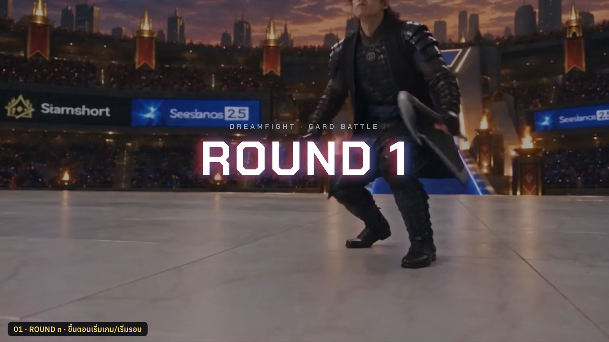
ขึ้นกลางจอตอนเริ่มเกมและเริ่มแต่ละรอบ ค้างราว 1.4 วิ
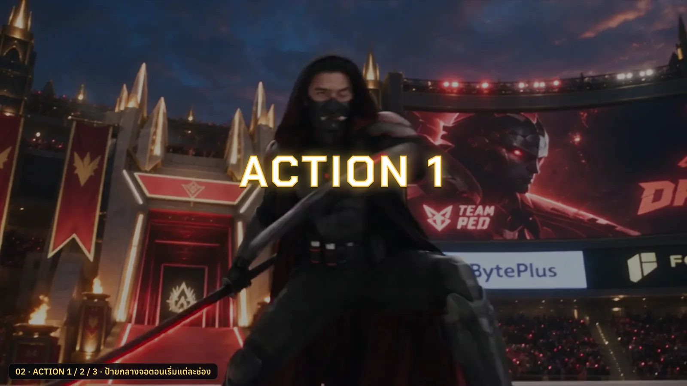
กลางจอตอนเริ่มเปิดแต่ละช่อง ทับ VDO ช่วงต้น ค้าง 2.2 วิ
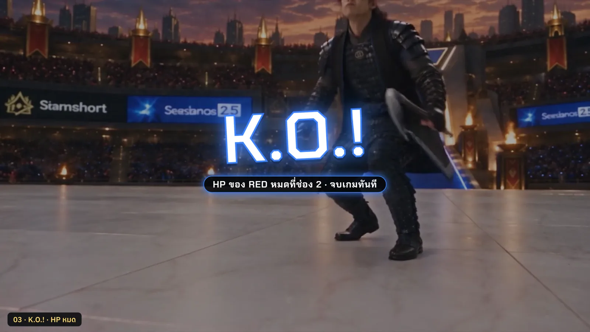
HP ฝั่งใดฝั่งหนึ่งหมด ขึ้นทับเฟรมสุดท้ายของ VDO ก่อนท่าชนะ
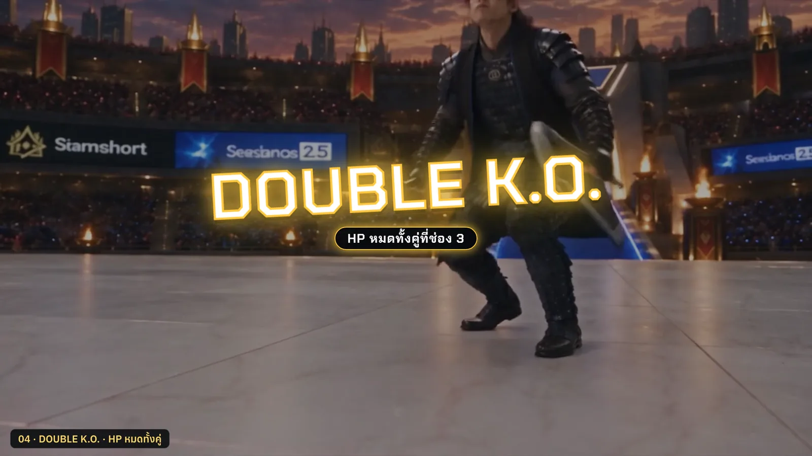
HP หมดทั้งสองฝั่งในช่องเดียวกัน (ผลเสมอ)
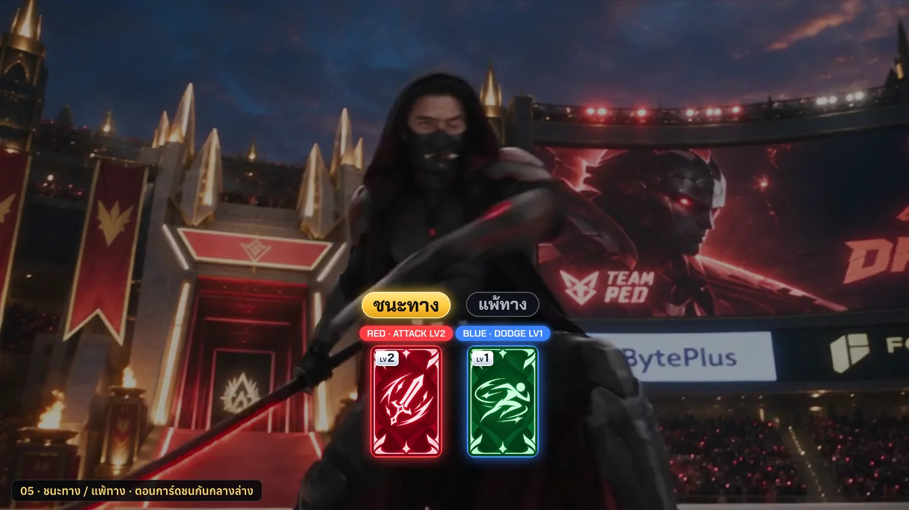
ตอนการ์ดสองฝั่งพุ่งมาชนกันกลางล่างจอ ก่อนพุ่งเข้าแถบ HP · ไม่มีใครชนะทาง = ไม่ขึ้น
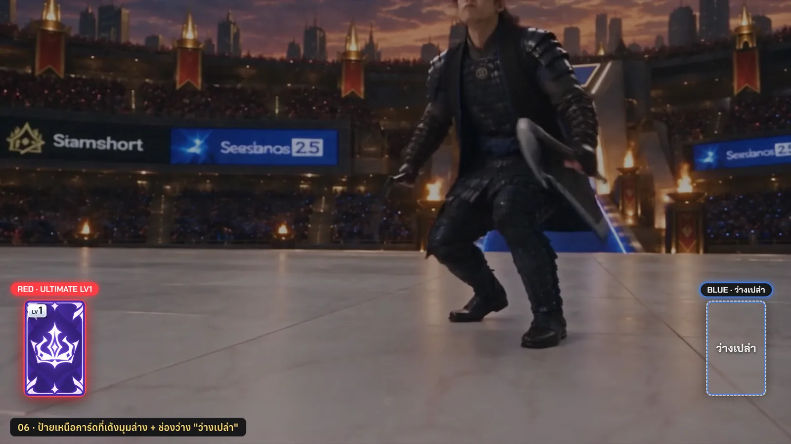
การ์ดเด้งขึ้นมุมล่างซ้าย/ขวาระหว่าง VDO · ฝั่งที่ไม่ลงการ์ดเป็นกรอบใส
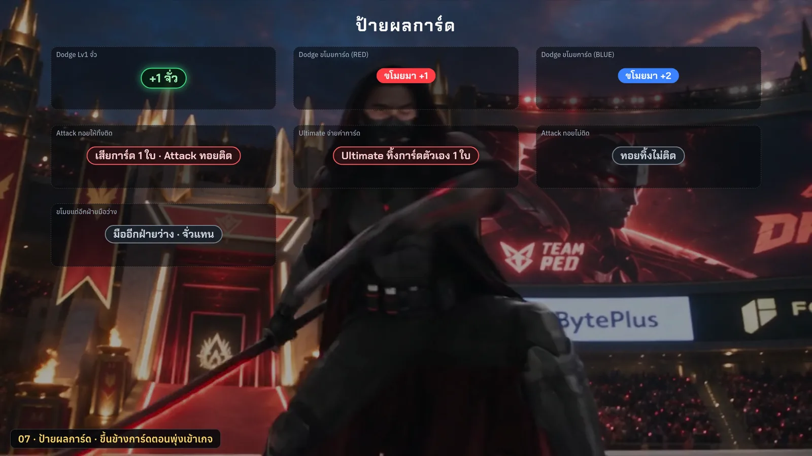
ขึ้นข้างการ์ดตอนการ์ดพุ่งเข้าเกจ (จั่ว / ขโมย / ทิ้งการ์ด)
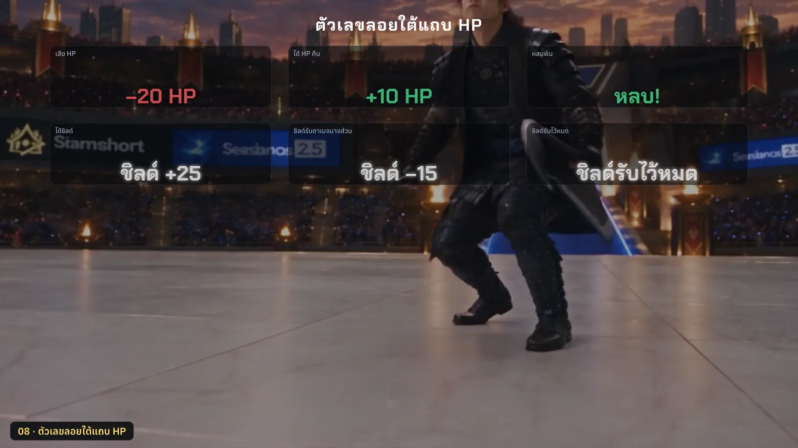
ตอนเลือดหรือชิลด์เปลี่ยน ลอยขึ้นแล้วจางใน 1.3 วิ
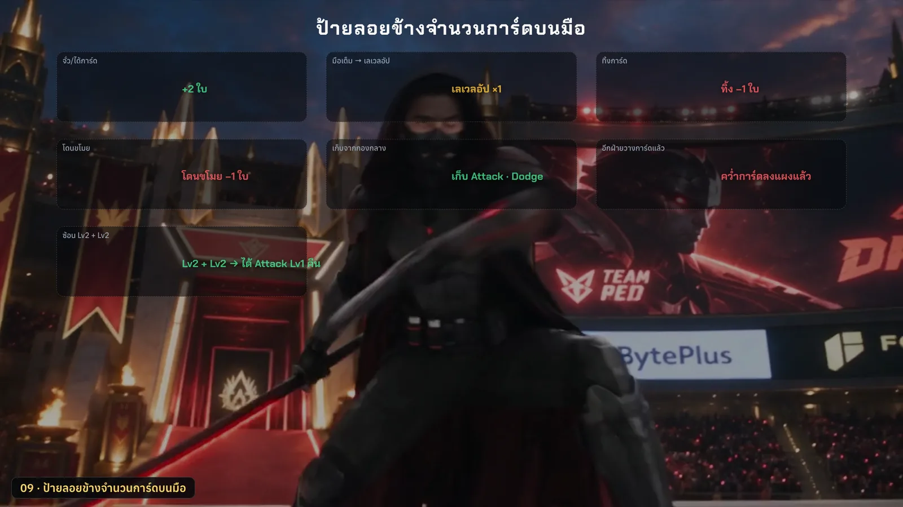
ข้างตัวเลขจำนวนการ์ดบนมือ ตอนจั่ว เก็บ ทิ้ง โดนขโมย ลอยขึ้นแล้วจางใน 1.2 วิ
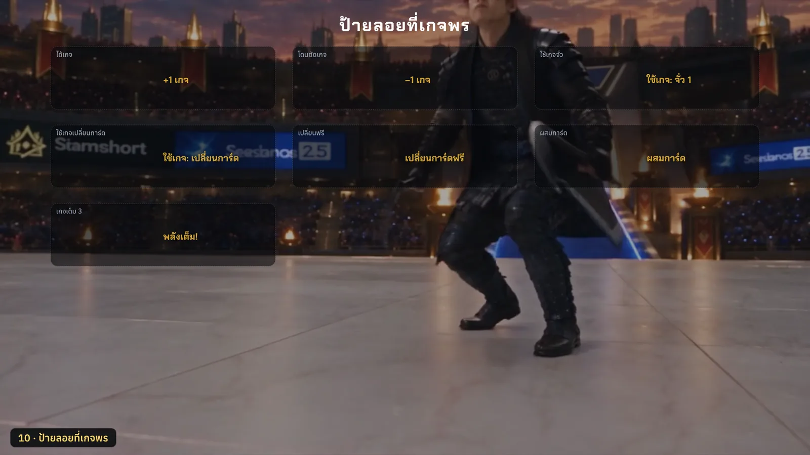
เหนือกรอบเกจพรตอนได้ เสีย หรือใช้เกจ
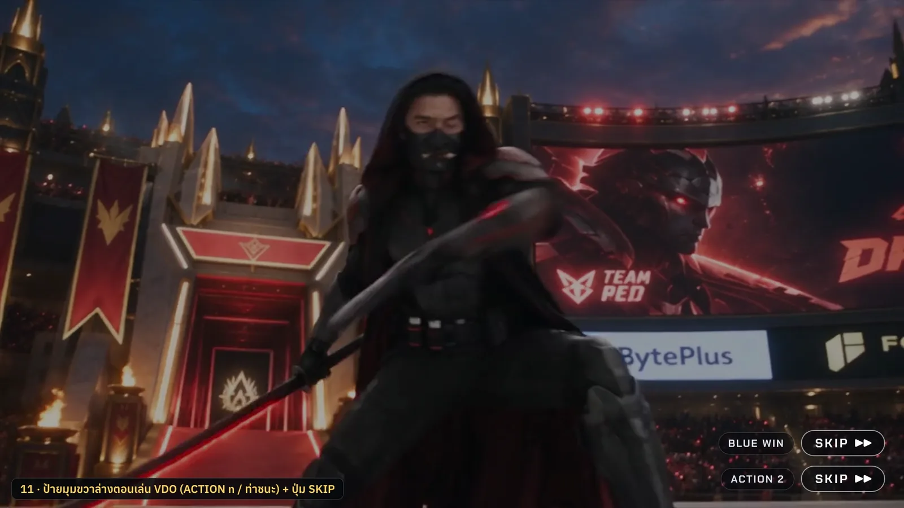
มุมขวาล่างตลอดการเล่น VDO ปะทะและ VDO ท่าชนะ
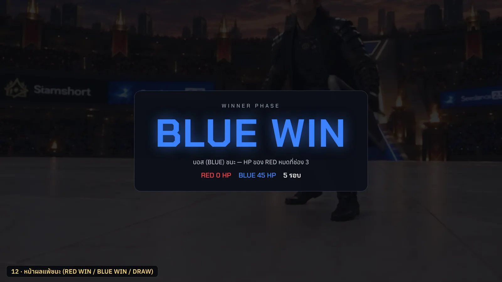
หลัง K.O. และ VDO ท่าชนะ หรือจบรอบที่ตัดสินผลได้
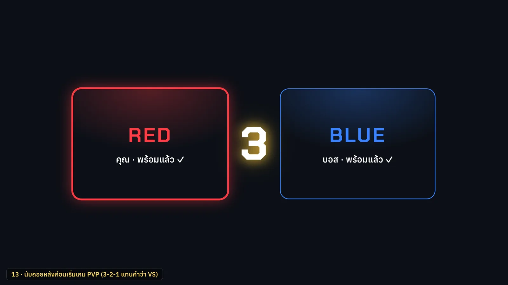
ในห้อง PVP พอกด READY ครบสองฝั่ง ตัวเลขขึ้นแทนคำว่า VS ก่อนเข้าเกม